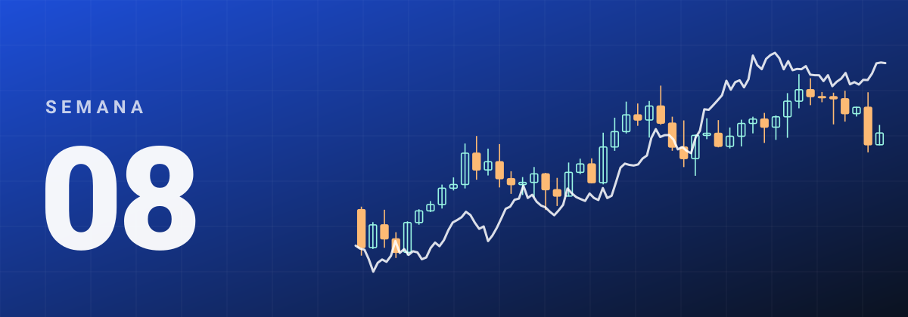
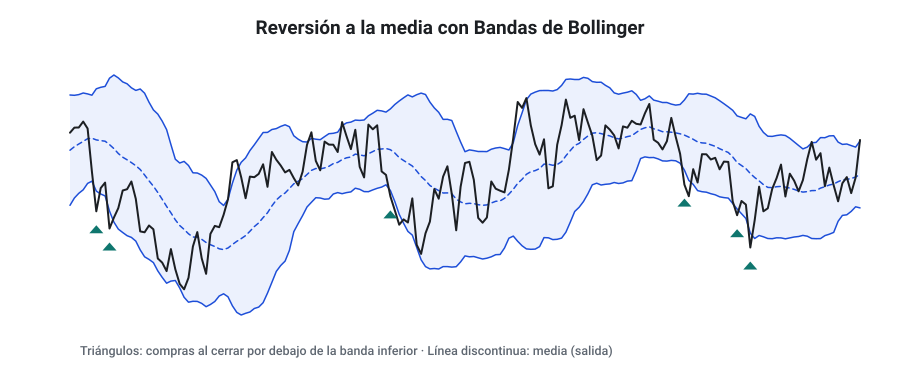
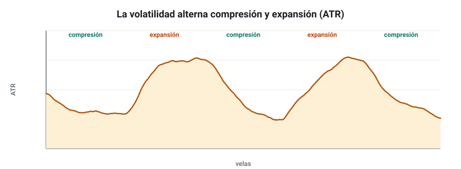
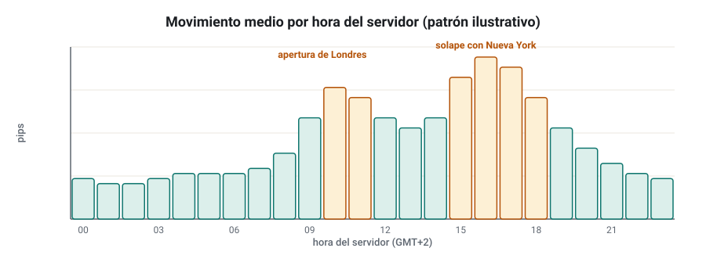
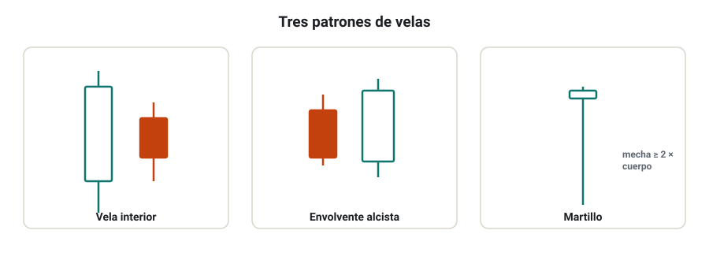
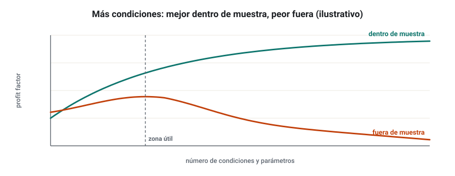
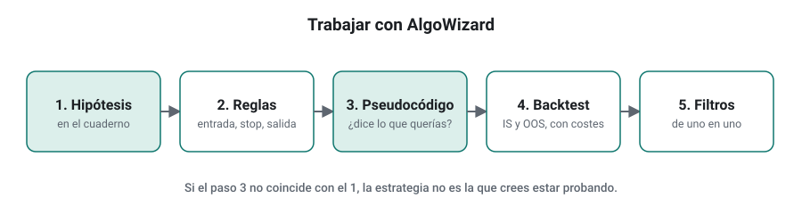

SEMANA 08 · ETAPA 2 · STRATEGYQUANT X
Reversión, volatilidad, estacionalidad, acción del precio e híbridas
Presentación de la semana
La semana pasada estudiaste estrategias que apuestan a que el movimiento continúa. Esta semana estudiarás las que apuestan a lo contrario —la reversión a la media— y otras tres fuentes de ideas: la volatilidad, la estacionalidad y la acción del precio. Después verás cuándo tiene sentido combinarlas en estrategias híbridas y cuándo solo añade sobreajuste. Por último, aprenderás a construir una idea propia, regla a regla, con AlgoWizard. Cerrarás la etapa 2 con una estrategia propia de cada familia que elijas.
Objetivos
Al terminar la semana sabrás:
- Explicar la lógica de la reversión a la media, sus indicadores y sus riesgos.
- Diseñar estrategias basadas en cambios de volatilidad.
- Investigar la estacionalidad horaria y de calendario sin caer en la minería de datos.
- Traducir patrones de velas a reglas exactas.
- Decidir cuándo combinar lógicas aporta y cuándo sobreajusta.
- Construir una estrategia propia en AlgoWizard sin programar.
Plan de la semana (22–25 horas)
| Bloque | Horas | Qué harás |
|---|---|---|
| Clases | 6 | Siete lecciones: lectura y vídeos |
| Prácticas | 12 | AlgoWizard, proyectos por familia y ejercicios |
| Investigación y evaluación | 4 | Investigación I-08, entrega y examen |
| Revisión y planificación | 2 | Glosario, cuaderno, repaso de la etapa 2 y plan de la semana 9 |
Qué necesitas
- SQX con tus datos de EUR/USD. AlgoWizard está incluido en todas las ediciones.
- Los tres proyectos de la semana 7.
- Tu plantilla de métricas.
Criterio para desbloquear la semana 9
Tener en estado APROBADO, con un 80 % o más cada uno:
- ☐ Examen de la semana 8
- ☐ Entrega práctica: una estrategia propia por familia elegida, construida en AlgoWizard y probada
- ☐ Investigación I-08: pasos 1 a 5, 7 y 8 documentados
Mean reversion
Formato: clase de 35 minutos · Lectura: 30 minutos
La lógica
La reversión a la media (mean reversion) apuesta a que, tras un movimiento exagerado, el precio tiende a volver hacia un valor «normal». Es lo contrario del momentum: compra lo que ha caído mucho y vende lo que ha subido mucho. Funciona en mercados o periodos laterales y, en general, en horizontes cortos.
Herramientas habituales
- Bandas de Bollinger: comprar al tocar la banda inferior (2 desviaciones estándar por debajo de la media) y salir en la media.
- RSI en extremos: comprar con RSI(2) o RSI(14) muy bajo; vender muy alto.
- Distancia a una media: comprar si el precio está más de N ATR por debajo de su media de 20 periodos.
- Órdenes límite: entrar a un precio mejor, esperando que el precio venga a ti.

Su perfil
Es el espejo del seguimiento de tendencia:
- Tasa de acierto alta (a menudo del 60 % al 75 %) y ratio bajo.
- Asimetría negativa: muchas ganancias pequeñas y, de vez en cuando, una pérdida grande cuando el mercado no vuelve y empieza una tendencia.
- Curvas muy suaves… hasta que dejan de serlo.
Dónde funciona mejor
- En índices de acciones a corto plazo, la reversión a la media ha sido una de las ideas más estudiadas.
- En pares de divisas que pasan mucho tiempo en rangos, como algunos cruces, en las horas tranquilas.
- Siempre con un filtro de régimen: evitar operar contra una tendencia fuerte (por ejemplo, solo comprar caídas si el precio está por encima de la media de 200 periodos).
Comprueba que lo has entendido
- ¿Por qué la reversión a la media tiene asimetría negativa?
- Escribe una regla de reversión con RSI y un filtro de régimen.
- ¿Por qué no se debe quitar el stop loss a una estrategia de reversión?
Estrategias de volatilidad
Formato: clase de 30 minutos · Lectura: 25 minutos
La volatilidad tiene memoria
La volatilidad no es constante: se agrupa. A los días tranquilos les siguen días tranquilos, y a los movimientos grandes, movimientos grandes. Además, tiende a alternar entre compresión y expansión. Las estrategias de volatilidad aprovechan estos ciclos.

Ideas habituales
- Compresión y expansión: si el ATR o el ancho de las Bandas de Bollinger están en su mínimo de N velas, preparar una ruptura (enlaza con la semana 7).
- Filtro de volatilidad: no operar si la volatilidad es demasiado baja (los costes pesan más) o demasiado alta (los stops se disparan).
- Stops y objetivos proporcionales: usar múltiplos del ATR para que la estrategia se adapte sola.
- Tamaño según volatilidad: arriesgar lo mismo en dinero con stops más amplios en mercados agitados (lo aplicarás en las carteras).
Comprueba que lo has entendido
- ¿Qué significa que la volatilidad «se agrupa»?
- Escribe un filtro de volatilidad para una estrategia de H1.
- ¿Qué ventaja tiene usar stops en múltiplos del ATR?
Estacionalidad horaria y de calendario
Formato: clase de 35 minutos · Lectura: 30 minutos
Qué es
La estacionalidad es la tendencia de un mercado a comportarse de forma parecida en ciertos momentos: horas del día, días de la semana, días del mes o meses del año. Algunas tienen causas claras:
- Horaria: la apertura de Londres y el solape con Nueva York concentran el volumen en Forex (semana 1).
- De calendario: los flujos de fin de mes de fondos y empresas, la publicación de datos a hora fija o los vencimientos de futuros.

El peligro: la minería de datos
Si pruebas 24 horas × 5 días × 12 meses, encontrarás combinaciones que «funcionan» por casualidad. Es el mismo sesgo de selección de la semana 4. Para que una estacionalidad merezca confianza:
- Debe tener una explicación que puedas escribir antes de mirar los datos.
- Debe repetirse en distintos periodos y, si es posible, en mercados parecidos.
- Debe sobrevivir a los costes.
En SQX
La estacionalidad se usa sobre todo como filtro: limitar las horas de operación en las opciones de trading o añadir condiciones de hora y día de la semana a los bloques. Úsala con moderación: cada filtro horario es un parámetro más.
Comprueba que lo has entendido
- Pon un ejemplo de estacionalidad horaria con una explicación económica.
- ¿Qué tres condiciones debe cumplir una estacionalidad para ser fiable?
- ¿Por qué el horario de verano puede crear patrones falsos?
Price action y patrones de velas
Formato: clase de 35 minutos · Lectura: 30 minutos
De la intuición a la regla
La acción del precio (price action) analiza las velas sin indicadores. Muchos de sus patrones se describen de forma vaga («una vela de rechazo fuerte»). Para un algoritmo, hay que convertirlos en reglas exactas.

| Patrón | Definición exacta (compra) |
|---|---|
| Vela interior (inside bar) | Máximo de la vela 1 < máximo de la vela 2 y mínimo de la vela 1 > mínimo de la vela 2 (la 1 es la más reciente) |
| Envolvente alcista (bullish engulfing) | Vela 2 bajista; vela 1 alcista con apertura ≤ cierre de la 2 y cierre ≥ apertura de la 2 |
| Martillo (pin bar) | Mecha inferior ≥ 2 veces el cuerpo y cierre en el tercio superior del rango |
Cómo usarlos
Por sí solos, los patrones de velas rara vez tienen ventaja después de costes. Suelen funcionar mejor como disparador dentro de un contexto: una vela interior en dirección de la tendencia, un martillo en la banda inferior de Bollinger, etc. SQX incluye bloques de patrones y de comparaciones de velas que permiten construirlos.
Comprueba que lo has entendido
- Escribe la definición exacta de una envolvente bajista.
- ¿Por qué un patrón de velas suele necesitar contexto?
- Define con números una «vela de rango grande».
Híbridas: cuándo combinar lógicas aporta y cuándo sobreajusta
Formato: clase de 30 minutos · Lectura: 25 minutos
Qué es una híbrida
Una estrategia híbrida combina lógicas de familias distintas: una tendencia como filtro y una reversión como entrada, o una ruptura con un filtro estacional. Bien hecha, cada pieza tiene una función clara. Mal hecha, es una acumulación de condiciones que encaja con el pasado.
Cuándo aporta
- Cuando cada parte tiene una razón que puedes explicar: «solo compro caídas (reversión) dentro de una tendencia alcista (filtro de tendencia)».
- Cuando cada condición mejora el resultado fuera de muestra, no solo dentro.
- Cuando el número total de parámetros sigue siendo pequeño.
Cuándo sobreajusta
- Cuando las condiciones se añaden «porque mejoran el backtest».
- Cuando hay más de 4 o 5 condiciones de entrada.
- Cuando quitar cualquier condición destruye la estrategia: eso indica que el resultado depende de una combinación demasiado precisa.

Comprueba que lo has entendido
- Pon un ejemplo de híbrida con sentido y explica la función de cada parte.
- ¿Qué indica que quitar cualquier condición destruya la estrategia?
- ¿Cómo comprobarías si una condición sobra?
AlgoWizard: construir una idea propia sin programar
Formato: taller de 40 minutos · Práctica: 2 horas
Para qué sirve
AlgoWizard es el editor de estrategias de SQX: en lugar de que el Builder genere reglas al azar, las defines tú, regla a regla, con menús y bloques. Sirve para:
- Probar tus propias hipótesis con una regla concreta.
- Reconstruir una estrategia que conoces (de un libro o un artículo) y comprobarla con tus datos y costes.
- Crear una plantilla cuya parte variable completará después el Builder.

El flujo de trabajo
- Escribe la regla en tu cuaderno, en lenguaje normal, antes de abrir el programa.
- Crea una estrategia nueva en AlgoWizard y define: las condiciones de entrada en largo y en corto, el tipo de orden, el stop loss, el take profit u otras salidas, y las opciones de trading.
- Comprueba el pseudocódigo que muestra el programa: debe decir exactamente lo que escribiste.
- Haz el backtest con tus datos, costes y periodos IS y OOS.
- Guarda la estrategia y envíala al Retester si quieres hacer más pruebas.
Comprueba que lo has entendido
- ¿En qué se diferencia AlgoWizard del Builder?
- ¿Por qué se escribe la regla antes de abrir el programa?
- ¿Para qué sirve revisar el pseudocódigo?
Taller: una estrategia propia de cada familia elegida
Formato: taller guiado de 60 minutos · Práctica: 6–8 horas
Elige dos familias de las vistas en las semanas 7 y 8 (por ejemplo, ruptura y reversión) y construye en AlgoWizard una estrategia propia de cada una.
Paso 1 · Escribe las hipótesis
Para cada familia, escribe en tu cuaderno: la idea, por qué crees que podría funcionar en EUR/USD, la regla exacta y lo que esperas (tasa de acierto aproximada, ratio, número de operaciones al año).
Paso 2 · Construye la versión base
Crea cada estrategia en AlgoWizard con la regla mínima: entrada, stop y salida. Sin filtros.
Paso 3 · Prueba con la configuración común
Datos, costes, zona horaria, periodos IS y OOS y tamaño fijo, iguales que en la semana 7.
Paso 4 · Añade como máximo dos filtros
Añade los filtros uno a uno y anota el efecto en IS y en OOS. Quédate solo con los que mejoren ambos.
Paso 5 · Compara con el Builder
Compara tus estrategias con las mejores del Builder de la misma familia (semana 7): ¿son más simples? ¿Se comportan mejor o peor fuera de muestra?
Comprueba que lo has entendido
- ¿Se parecieron los resultados a lo que esperabas en el paso 1?
- ¿Qué filtro aportó más fuera de muestra?
- ¿Qué estrategia, tuya o del Builder, te parece más fiable y por qué?
Glosario de la semana
| Término | Inglés | Definición |
|---|---|---|
| AlgoWizard | AlgoWizard | Editor de SQX para construir estrategias regla a regla |
| Bandas de Bollinger | Bollinger Bands | Media móvil con bandas a N desviaciones estándar |
| Compresión de volatilidad | Volatility squeeze | Periodo de volatilidad inusualmente baja |
| Envolvente | Engulfing | Vela cuyo cuerpo envuelve el de la anterior |
| Estacionalidad | Seasonality | Comportamiento repetido en ciertas horas, días o meses |
| Estrategia híbrida | Hybrid strategy | Estrategia que combina lógicas de familias distintas |
| Filtro de régimen | Regime filter | Condición que indica si el mercado está en tendencia o en rango |
| Martillo | Pin bar / hammer | Vela con una mecha larga y un cuerpo pequeño en el otro extremo |
| Minería de datos | Data mining | Búsqueda masiva de patrones que produce falsos hallazgos |
| Price action | Price action | Análisis del precio y las velas sin indicadores |
| Pseudocódigo | Pseudocode | Descripción legible de las reglas de una estrategia |
| Reversión a la media | Mean reversion | Tendencia del precio a volver hacia un valor medio |
| Vela interior | Inside bar | Vela cuyo rango queda dentro del de la anterior |
Ejercicios obligatorios
E1 · Reversión. Diseña una estrategia completa de reversión con Bandas de Bollinger para EUR/USD H1, con filtro de régimen, stop y salida.
E2 · Perfil. Una estrategia de reversión acierta el 70 % con una ganancia media de 0,5 R y una pérdida media de 1 R. Calcula su esperanza en R y su tasa de acierto de equilibrio. ¿Cuánto margen tiene?
E3 · Asimetría. Explica con un ejemplo numérico por qué una sola pérdida de 10 R puede borrar los beneficios de 20 operaciones de una estrategia de reversión.
E4 · Volatilidad. Escribe una regla que detecte compresión de volatilidad con el ATR y prepare una ruptura.
E5 · Estacionalidad. Propón dos hipótesis de estacionalidad para EUR/USD con su explicación económica, antes de mirar ningún dato.
E6 · Minería de datos. Si pruebas las 24 horas del día por separado y aceptas una hora como «buena» si su resultado tiene t > 2, ¿cuántas horas esperas encontrar por azar aunque no haya ningún efecto real?
E7 · Patrones. Escribe la definición exacta de una vela bajista de rango grande y de un martillo invertido.
E8 · Híbrida. Analiza esta estrategia: «Comprar si RSI(3) < 10, el precio está por encima de la SMA(200), es martes o jueves, la hora está entre 10:00 y 14:00, el ATR(14) está por encima de su media de 50 y la vela anterior es interior». ¿Qué condiciones mantendrías y cuáles quitarías primero? Justifícalo.
E9 · AlgoWizard. Escribe el pseudocódigo esperado de tu estrategia de reversión del E1, tal como debería aparecer en SQX.
E10 · Repaso de la etapa 2. Haz una tabla con las cinco familias vistas (tendencia, ruptura, momentum, reversión y volatilidad): perfil de acierto y ratio, asimetría, temporalidad habitual, mayor riesgo y tipo de orden más común.
Investigación I-08 y entrega práctica
Investigación I-08 · ¿Aporta un filtro de régimen a la reversión?
Paso 1 · Hipótesis. Ejemplo: «Añadir un filtro de tendencia (solo comprar por encima de la SMA(200) y vender por debajo) a una estrategia de reversión en EUR/USD H1 reduce el drawdown máximo fuera de muestra sin reducir el profit factor».
Paso 2 · Fuentes. Cita al menos una fuente sobre reversión a la media o filtros de régimen.
Paso 3 · Datos. Los de la etapa.
Paso 4 · Diseño del experimento. Define: la estrategia base exacta, el filtro exacto, las métricas que compararás (profit factor, drawdown, operaciones) y en qué periodos. Fija el criterio de éxito antes de probar.
Paso 5 · Generación. Construye en AlgoWizard la versión con y sin filtro. Si quieres, prueba también algunas variantes de parámetros, pero anótalas todas.
Paso 7 · Comparación. Tabla con ambas versiones en IS y OOS, y las curvas de capital superpuestas.
Paso 8 · Conclusiones. ¿Se confirma? ¿Cuántas variantes probaste? ¿Cómo afecta eso a la confianza en el resultado?
Entrega práctica · Estrategias propias
Qué entregar
| Archivo | Contenido |
|---|---|
CODIGO_S08_ENT |
Para cada una de tus dos estrategias: hipótesis, regla en lenguaje normal, pseudocódigo de SQX, métricas IS y OOS, efecto de cada filtro y comparación con el Builder |
CODIGO_S08_SQX |
Las dos estrategias guardadas desde SQX |
CODIGO_S08_INV |
Hoja de la investigación I-08 |
| Ejercicios | E1 a E10 |
Cómo se evaluará
Se valora que la hipótesis esté escrita antes de construir, que el pseudocódigo coincida con la regla, que los filtros se hayan añadido uno a uno con su efecto documentado y que la conclusión sea honesta. Esta entrega cierra la etapa 2.
Examen de la semana 8 · Variante A
Tiempo orientativo: 60 minutos · Puntuación: 100 puntos · Aprobado: 80 puntos · Puedes usar calculadora, pero no el material del curso ni el tutor de IA. Si suspendes, repetirás con otra variante.
Parte A · Opción múltiple (30 puntos, 2 por pregunta)
Parte B · Cálculo (45 puntos, 15 por ejercicio)
B1. Una estrategia de reversión acierta el 72 % con una ganancia media de 18 pips y una pérdida media de 40 pips. a) Calcula la esperanza en pips. b) Calcula la tasa de acierto de equilibrio. c) Recalcula la esperanza con un coste de 1,5 pips por operación.
B2. El ATR(14) en H1 de EUR/USD vale ahora 8 pips, y su media de los últimos 100 valores es 13 pips. a) ¿En qué porcentaje está el ATR por debajo de su media? b) Propón una regla de compresión con estos datos. c) Si la ruptura se opera con un stop de 2 ATR actuales, ¿cuántos pips son? ¿Qué problema tiene usar el ATR actual?
B3. En una prueba de estacionalidad, la hora 15:00 tiene 520 observaciones con un movimiento medio a favor de 1,8 pips y una desviación estándar de 22 pips. a) Calcula el estadístico t. b) ¿Es significativo? c) Si esta hora era una de 24 probadas, ¿cambia tu conclusión?
Parte C · Razonamiento (25 puntos)
En un máximo de 250 palabras: compara una estrategia de reversión con una de tendencia en cuanto a perfil de resultados, riesgos y psicología. Explica por qué combinarlas en una cartera podría tener sentido.